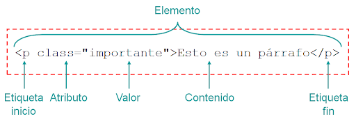

Etiquetas, atributos y valores

- 
Las etiquetas son la estructura básica del HTML. Estas etiquetas o tags se componen y contienen otras propiedades, como son los atributos y el contenido.
HTML define un total de 91 etiquetas, de las cuales 10 se consideran obsoletas. Sin embargo, una etiqueta por sí sola a veces no contiene la suficiente información para estar completamente definida. Para ello contamos con los atributos: pares nombre-valor separados por "=" y escritos en la etiqueta inicial de un elemento después del nombre del elemento. El valor puede estar encerrado entre "comillas dobles" o 'simples'. Existen, también, algunos atributos que afectan al elemento por su presencia en la etiqueta de inicio, como puede ser el atributo ismap para el elemento <img>.
Esta sería la estructura general de una línea de código en lenguaje HTML:
<tag attribute1="value1" attribute2="value2"> | content | </tag> |
|---|
O lo que es lo mismo, con un ejemplo:
<a href="http://www.enlace.com" target="_blank"> | Ejemplo de enlace | </a> |
|---|
Donde:
<a> | es la etiqueta o | tag | inicial y | </a> | la etiqueta de cierre. |
|---|---|---|---|---|---|
href y target | son los atributos. |
http://www.enlace.com y _blank | son las variables. | ||
Aunque también existen elementos vacíos que no necesitan tag de cierre, cuya estructura sería ésta:
<tag attribute1="value1" attribute2="value2" /> |
|---|
Estos elementos vacíos no constan de contenido, como por ejemplo, los tags <br> o <img>.
3.1 Tipos de atributos
Aunque cada una de las etiquetas HTML define sus propios atributos, encontramos algunos comunes a muchas o casi todas las etiquetas, que se dividen en cuatro grupos según su funcionalidad:
- Atributos básicos
- Atributos de internacionalización
- Atributos de eventos
- Atributos de foco
3.1.1 Atributos básicos
Los atributos básicos se utilizan en la mayoría de etiquetas HTML y XHTML, aunque adquieren mayor sentido cuando se utilizan hojas de estilo en cascada (CSS):
| Atributo Descripción | |
|---|---|
id="texto" | Establece un indicador único a cada elemento |
class="texto" | Establece la clase CSS que se aplica a los estilos del elemento |
style="texto" | Aplica de forma directa los estilos CSS de un elemento |
title="texto" | Establece el título del elemento (Mejora la accesibilidad) |
3.1.2 Atributos de internacionalización o i18n
Estos atributos se utilizan en aquellas páginas que muestran sus contenidos en varios idiomas y las que quieran indicar de forma explícita el idioma de sus contenidos:
| Atributo Descripción | |
|---|---|
lang="codigo" |
Indica el idioma del elemento |
xml:lang="codigo" | Indica el idioma del elemento, aunque tiene más prioridad que el atributo anterior y es obligatorio si se incluye el atributo lang |
dir | Indica la dirección del texto |
3.1.3 Atributos de eventos
Estos atributos se utilizan en las páginas web que incluyen código JavaScript para realizar acciones dinámicas sobre los elementos de la página.
Pueden ser utilizados por: todos los elementos
| Atributo Descripción | |
|---|---|
onclick | Ejecuta la acción cuando se realiza un clic sobre el elemento |
ondblclick | Ejecuta la acción cuando se realiza un doble clic sobre el elemento |
onmousedown | Ejecuta la acción cuando se detecta el botón pulsado del ratón |
onmouseup | Ejecuta la acción cuando se detecta que se ha soltado el botón del ratón |
onmousemove | Ejecuta la acción cuando se detecta el movimiento del ratón sobre el elemento |
onmouseout | Ejecuta la acción cuando el ratón abandona el elemento |
onmouseover | Ejecuta la acción cuando se detecta que el ratón se sitúa sobre el elemento |
Pueden ser utilizados por: <body>
| Atributo Descripción | |
|---|---|
onload | Ejecuta la acción cuando se carga el documento |
onunload | Ejecuta la acción cuando se abandona el documento |
onresize | Ejecuta la acción cuando se ha modificado el tamaño de la ventana del navegador |
Pueden ser utilizados por: elementos de formulario y <body>
| Atributo Descripción | |
|---|---|
onkeydown | Ejecuta la acción cuando se detecta que la tecla esta pulsada |
onkeyup | Ejecuta la acción cuando se detecta que se ha soltado la tecla pulsada |
onkeypress | Ejecuta la acción cuando se pulsa una tecla |
Pueden ser utilizados por: varios
| Atributo Descripción | Elementos que pueden usarlo | |
|---|---|---|
onblur | Ejecuta la acción cuando el elemento pierde el foco bien sea a través del ratón o por navegación tabulada | <button>, <input>, <label>, <select>, <textarea>, <body> |
onfocus | Ejecuta la acción cuando el elemento obtiene el foco bien sea a través del ratón o por navegación tabulada | <button>, <input>, <label>, <select>, <textarea>, <body> |
onchange | Ejecuta la acción cuando el valor de un control ha sido modificado | <input>, <select>, <textarea> |
onreset | Ejecuta la acción cuando el formulario es restablecido a sus valores por defecto | <form> |
onselect | Ejecuta la acción cuando un usuario selecciona texto en un campo de texto | <input>, <textarea> |
onsubmit | Ejecuta la acción cuando el formulario es enviado | <form> |
3.1.4 Atributos de foco
Se le denomina foco o focus, cuando un control o elemento del documento ha sido seleccionado. Cuando ese elemento deja de estar seleccionado, "pierde el foco" y es el nuevo elemento seleccionado el que se dice que tiene "el foco".
| Atributo Descripción | |
|---|---|
accesskey="letra" | Establece una tecla de acceso rápido a un elemento HTML |
tabindex="numero" | Establece la posición del elemento en el orden de tabulación de la página (valor entre 0 y 32.767) |
onfocus, onblur | Controlan los eventos JavaScript que se ejecutan cuando el elemento obtiene o pierde el foco |
3.2 Elementos
Además de etiquetas y atributos, HTML define el término elemento para referirse a las partes que componen los documentos HTML. Como ya hemos mencionado antes, la estructura general de una línea de código en lenguaje HTML sería ésta:
<tag attribute1="value1" attribute2="value2"> | content | </tag> |
|---|
El lenguaje HTML clasifica a todos los elementos en dos grupos: elementos en línea o inline elements y elementos en bloque o block elements.
La diferencia entre ambos viene dada por el modelo de contenido, por el formato y la dirección. La principal diferencia entre los dos tipos de elementos es la forma en la que ocupan el espacio disponible en la página: los elementos en bloque siempre empiezan en una nueva línea y ocupan todo el espacio disponible hasta el final de la línea, mientras que los elementos en línea sólo ocupan el espacio necesario para mostrar sus contenidos.
3.2.1 Elementos en línea (definidos por HTML)
| Atributo Descripción | |
|---|---|
a | Define un anchor (anclaje o hipervínculo) |
abbr | Marca las abreviaturas del texto y proporciona el significado de esas abreviaturas |
acronym | Marca las siglas o acrónimos del texto y proporciona el significado de esas siglas |
b | Indica que el texto debe ser representado e bold (o negrita) |
basefont | Permite cambiar algunas propiedades del texto |
bdo | Anulación del algoritmo bidireccional (en referencia a la dirección de la escritura) |
big | Muestra el texto marcado con un tamaño de fuente más grande |
br line break | ruptura (o salto) de línea |
cite | Se emplea para marcar una cita o una referencia a otras fuentes |
code | Delimita el texto considerado un fragmento de código fuente |
dfn | Marca las definiciones de ciertos términos y proporciona el significado de éstos |
ememphasis | énfasis |
fontIndica el tamaño, color, o fuente del texto que contiene | |
iMuestra el texto marcado con un estilo en cursiva o itálica | |
imgImagen | |
inputPosibilita y define la introducción de datos en el formulario | |
kbdIndicar al usuario el texto que debe introducir | |
labelAsocia un rótulo o etiqueta a un campo de un formulario | |
qshort quotations cita corta | |
sstrike-through tachado | |
sampSirve identificar una muestra de los caracteres que forman la salida o el resultado de algún proceso | |
selectCrea un contenedor mediante el cual el usuario puede seleccionar de una lista de opciones | |
smallAplica al texto marcado un tamaño de fuente más pequeño | |
spanEs un contenedor genérico en línea. Sirve para para aplicar estilo al texto o agrupar elementos en línea | |
strikeMuestra el texto tachado con una linea horizontal | |
strongMarca con especial énfasis las partes más importantes de un texto | |
subCrea un subíndice posicionando el texto marcado por debajo de la linea | |
supCrea un superíndice posicionando el texto marcado por encima de la linea | |
textareaCrea un control de entrada de texto multilínea | |
ttRepresenta como texto de teletipo o ancho fijo | |
uMuestra el texto subrayado | |
varMarca variables de programas y similares | |
3.2.2 Elementos en bloque (definidos por HTML)
| Atributo Descripción | |
|---|---|
address | Contiene la información de contacto con los autores del documento |
blockquote | Indica que el texto que encierra es una cita textual de otro texto externos |
center | Crea una caja en bloque con el contenido centrado |
dir | Crea listas multicolumna de directorios |
div | Es un elemento en bloque genérico y sirve para crear secciones o agrupar contenidos |
dl | Crea una lista de definiciones |
fieldset | Permite organizar en grupos los campos de un formulario |
form | Actúa como contenedor de controles. Representa un formulario |
h1, h2, h3, h4, h5, h6 | Crea un encabezado o título de primer, segundo, tercer, cuarto, quinto o sexto nivel para una sección del documento respectivamente |
hr | Crea una linea de separación horizontal |
isindex | Crea un control de entrada de texto de una línea |
menu | Crea un menú |
noframes | (sin marcos) - aporta contenidos alternativos a los marcos |
nos-cript | Contenedor de contenido alternativo para la representación no basada en scripts |
ol | Crea una lista ordenada |
p | Párrafo |
pre | Permite que el texto conserve el formato y sea mostrado tal cual |
table | Tabla |
ul | Crea una lista no ordenada |
3.2.3 Más elementos considerados en bloque
| Atributo Descripción | |
|---|---|
dd | Descripción de una definición |
dt | Término definido |
li | Objeto de lista |
tbody | Cuerpo de tabla |
td | Celda de datos de una tabla |
tfoot | Pie de tabla |
th | Celda de encabezado de tabla |
thead | Cabecera de tabla |
tr | Fila de una tabla |
3.2.4 Elementos que pueden ser en línea y en bloque
| Atributo Descripción | |
|---|---|
button | Botón |
del | Texto borrado |
iframe | Subventana en línea |
ins | Texto insertado |
map | Mapa de imágenes en el lado del cliente |
object | Objeto genérico incluído |
script | Sentencias de script |
Referencia bibliografica
Garro, A. (s.f). CAPÍTULO 3 ETIQUETAS, ATRIBUTOS Y ELEMENTOS. s.l. XHTML. Recuperado de https://www.arkaitzgarro.com/xhtml/capitulo-3.html